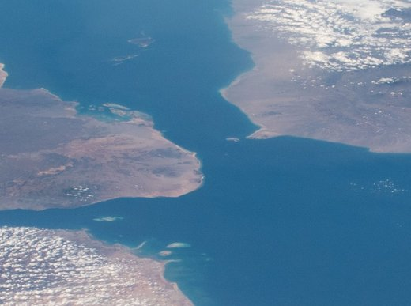

Nu se susține
Extern
2026-09-12
Houthii spun că au control „total” pe Bab al-Mandeb și că navigația e „sigură” — dar traficul naval s-a prăbușit de la 30 la 12 nave pe zi 🌍 După ce au cucerit portul Mocha și insula Perim (Mayyun), houthii… Nu se susține · 4 probate · 2 contestate https://farabaliverne.ro/a/houthi-bab-al-mandeb-control-navigatie-sigura-trafic-prabusit.html
Houthii spun că au control „total” pe Bab al-Mandeb și că navigația e „sigură” — dar traficul naval s-a prăbușit de la 30 la 12 nave pe zi 🌍 După ce au cucerit portul Mocha și insula Perim (Mayyun), houthii susțin, prin oficialul de politburo Hazem al-Assad, că navigația comercială prin strâmtoarea Bab al-Mandeb rămâne „sigură și ordonată”. Datele portuare arată altceva: traficul naval prin zonă a scăzut de la 30 de nave miercuri la 12 joi, iar un comandant houthi a promis să „țintească liniile de petrol”. Bilanțul luptelor diferă între surse — de la… ✅ Se probează: • Houthii, susținuți de Iran, au preluat controlul portului strategic Mocha, pe coasta yemenită a Mării Roșii, la finalul unei ofensive care a continuat spre insulele Zuqar, Hanish și Perim (Mayyun), aflată chiar în mijlocul strâmtorii Bab al-Mandeb. Prin această strâmtoare trece… • Un membru al biroului politic houthi, Hazem al-Assad, a declarat că „libertatea de navigație și comerțul internațional în Marea Roșie și Bab al-Mandab sunt sigure și ordonate”. Purtătorul de cuvânt militar houthi, Yahya Saree, a precizat însă, separat, că navele saudite rămân… ⚠️ Rămâne contestat: • Bilanțul exact al luptelor diferă în funcție de sursă și de perioada măsurată: pentru o singură zi (sâmbătă), surse militare și medicale citate de AFP numărau peste 60 de morți (26 militari guvernamentali, 31 luptători houthi, 6 civili într-un autobuz), în timp ce agenția ONU… Unde bat probele: nu se susține. Sursele, în articol: https://farabaliverne.ro/a/houthi-bab-al-mandeb-control-navigatie-sigura-trafic-prabusit.html
Vezi articolul
273 caractere